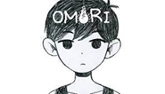
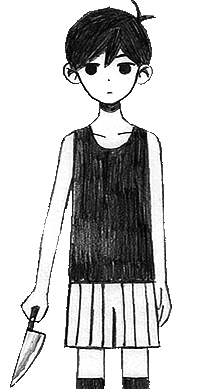
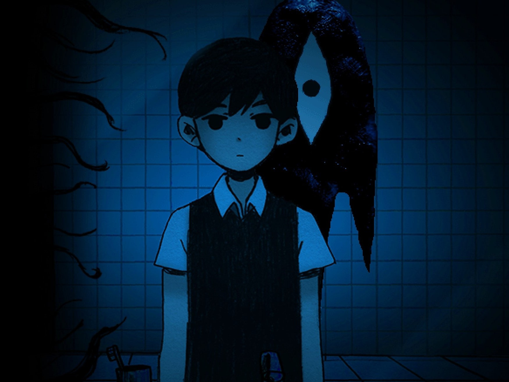

OMORI'S STORY

 WELCOME TO WHITE SPACE.
WELCOME TO WHITE SPACE.
YOU HAVE BEEN LIVING HERE FOR
AS LONG AS YOU CAN REMEMBER.

YOU HAVE BEEN LIVING HERE FOR
AS LONG AS YOU CAN REMEMBER.
What is OMORI?
 OMORI is a surreal psychological horror RPG game. Developed by OMOCAT, it was released for PC on Steam on December 25, 2020. The game is based on several of OMOCAT's previous works, such as OMORI'S BLOG, OMORI'S STORY, OMORI'S SKETCHBOOK, and an unfinished comic book. OMORI is heavily inspired by the Mother series, especially EarthBound and Mother 3. It has been noted that it could also be inspired by Yume Nikki, another independent horror RPG Maker game. The art direction combines pixel art with hand-drawn art. The overworld and its characters are rendered with pixel art, while enemy battles, item images, and key cutscenes are rendered with hand-drawn illustrations.
Who is OMORI?
 OMORI is the titular character, a black and white boy who has lived in WHITE SPACE for as long as he can remember. He can OBSERVE enemies or read a sad poem to make one of his friends sad. His FRIENDLY FOLLOW-UPS are offensive and oddly don't involve working with his friends, with the exception of his most powerful, RELEASE ENERGY. His main weapon is knives, which he seems to have a fascination with.
OMORI'S STORY
 "Welcome to WHITE SPACE. Your name is OMORI and you've lived here for as long as you can remember. Everything is bright white; there are no walls. A black light bulb hangs from the ceiling... wherever it is. A floor, but it's always cold The warmest in here is probably your laptop But you don't mind You have a blanket, a laptop, a cat, a sketchbook and a tissue box You have everything you need. Usually you are angry. Everyone annoys you, you think you're ugly, you don't know where you're from, you don't know where you're going and you're too tired to care. On good days, your neighbors invite you to visit. "How can they have fun with someone as terrible as me?" You miss them now. When will they come again? Maybe today will be a good day! Or maybe today is a day to sleep. But... Sometimes you are reminded that you had another friend, someone who is very important. Somewhere in the back of your mind you feel like you weren't always like that. You didn't always live in WHITE SPACE. The truth is... Your story is already over. You just have to remember it."